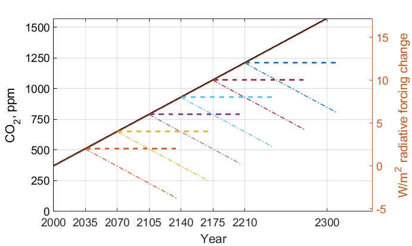
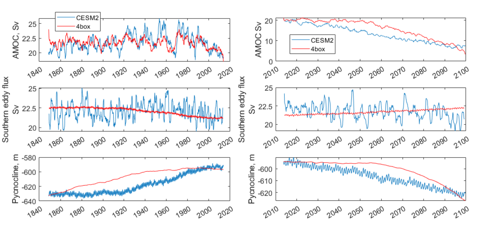

Milestone 9 Progress Report
Approved for public release; distribution is unlimited. This material is based upon work supported by the Defense Advanced Research Projects Agency (DARPA) under Agreement No. HR00112290032.
PACMANS TEAM: • Jennifer Sleeman (JHU APL) PI • Anand Gnanadesikan (JHU) Co-PI • Yannis Kevrekidis (JHU) Co-PI • Jay Brett (JHU APL) • David Chung (JHU APL) • Chace Ashcraft (JHU APL) • Thomas Haine (JHU) • Marie-Aude Pradal (JHU) • Renske Gelderloos (JHU) • Caroline Tang (DUKE) • Anshu Saksena (JHU APL) • Larry White (JHU APL) • Marisa Hughes (JHU APL)
Overview
This technical report covers the period of December 13, 2022, through January 9, 2022.
The deliverable for this milestone is this report. This report includes a detailed research plan for Phase 2, which details the finalized strategy to estimate the “value of new data” and finalized targets for forecast.
Team Resources• Code
https://github.com/JHUAPL/PACMANs - Public to all (Up to date with all code from start to MS 3 deliverables)
https://github.com/JHUAPL/PACMANs_internal - Public to DARPA, JHU, and APL (Hold until internal approvals)
Documentation
Datasets
Goals and ImpactGoal for this milestone includes:Finalize strategy to estimate the “value of new data” and finalize the targets for forecast.
Preliminary Discussion – Data Sources
The primary dataset for scientific discovery will be the CMIP6 archive of global coupled models.
Those models with ensembles of runs for certain forward projections will be valuable in understanding predictability of the changes in AMOC.
Model disagreement, paired with GAN discovery of tipping points,
will identify the important parameters or conditions that control the AMOC shutoff.
Observations that could put limits on these parameters or indicate
these conditions will be the most valuable new data that could be generated.
We expect important initial conditions to include the AMOC
strength, which could be better measured with added data from floats for improved T, S structure measures, moorings for bottom pressure, or satellite SST and SSS.
We expect an important forcing to be the freshwater flux from the
Arctic, which might be measured by floats and satellites.
We expect the important parameters to be mixing rates, which can be
measured with in-situ and satellite monitoring of significant salinity anomalies for their decay rate or potentially dye experiments at the (sub)mesoscale.
Existing satellite and ARGO datasets will be examined to determine
what we can already learn of freshwater fluxes, AMOC strength, and salinity anomalies to constrain our model analyses.
Preliminary Discussion – Value of New Data
Emergent parameters- efficiency with which large-scale available potential energy is converted to overturning.
Emergent behavior- low damping of salinity anomalies near collapse (requires measuring air- sea water fluxes/salt transports).
Precursor patterns- focus modeling activity near tipping point, look for common precursors of collapse.
{kind=link}
Preliminary Discussion – Questions to Explore
Is there emergent behavior that can serve as a an index of whether models are approaching a tipping point?
Amplitude of variability in the overturning circulation?
Appearance or disappearance of oscillations in overturning transport?
Damping time and/or persistence of salinity anomalies.
Relative phase of salinity and pycnocline depth anomalies.
Is this emergent behavior detectable with a relatively short time series?
Example: In box model, overturning variability increases as tipping
point is approached… but hundreds of years of output are needed to see changes.
Examine whether this is true in models with different periodicities
in overturning variability.
How does the AI simulation exploit this emergent behavior?
Could the GAN be directed to exploit spaces that have high
probability of causing a tip?
Could additional data be used to improve the adversarial game?
Task 1.5: Use Case Ocean Modeling – Value of New Data for Tipping Point Detection Experiments
Subtask Description: Develop a scenario-based experiment that will exploit the value of new data and measure how the system performs under condition where new data from additional sources will improve the overall functioning of the system.
Tipping points may differ across models and between models and the real world because models don’t have precursors of overturning change correctly.
Example- plot at left show precursors of a 1Sv rise in overturning in a climate model (similar to recent observations).
Are precursors robust across models- and do they also project onto tipping point collapse (use data from CMIP6 models to evaluate this)?
Use Case Experiment: Evaluate whether initializing a model near collapse with positive/negative precursor patterns determines whether it collapses.
{kind=link}
Task 1.5: Use Case Ocean Modeling – Value of New Data for Tipping Point Detection Experiments
Subtask Description: Develop a scenario-based experiment that will exploit the value of new data and measure how the system performs under condition where new data from additional sources will improve the overall functioning of the system.
Tipping points may differ across models and between models and the
real world because models don’t respond to perturbations correctly.
Problem- this response is an emergent relationship, depending on
many parameters.
Preliminary result- lateral mixing can play a part in this
relationship.
• Use Case Experiment:Run simulations where lateral mixing is changed in boundary of subpolar gyre. See if this makes models less stable.Results from these two “value of data experiments” will direct the additional experiments to be conducted during Phase 2.
Use Case Ocean Modeling Experimental Plan
From a steady 2000s climate, we increase atmospheric CO2 at a constant rate of 4ppm/year (1%). Each 35 years, at an effective radiative increase of 2W/m2, we branch off two simulations: one with constant CO2 and one with decreasing CO2 at the same 1% annual rate. These will determine whether the AMOC recovers, stabilizes, or continues to collapse under different possible future carbon states.
{kind=link}
Use Case Ocean Modeling Experimental Plan
When we identify the CO2 range for collapse, we will run a small ensemble of runs covering the lead up and collapse. This will have two methods:
When we identify the CO2 range for collapse, we will run a small ensemble of runs covering the lead up and collapse. This will have two methods: 1. Targeted: Several runs will have varying initial conditions of known climate oscillations (e.g. Atlantic Multidecadal Oscillation (AMO) phase) and AMOC strength. We will also adjust the parameters from the box model that the GAN indicates the tipping point or separatrix is most sensitive to. We will further incorporate observations to constrain parameters and evaluate their effects. 2. Random: We will also repeat runs with roundoff-level differences in the atmosphere’s initial conditions. This will allow us to understand the sensitivity of AMOC collapse and recovery, determine what additional measurements could reduce uncertainty in such projections, and enable a parallel understanding of collapse to that of the GAN.
Data Experimental Plan 1. Calibration of historical and forward scenarios of multiple CMIP models will be used to study AMOC collapse through integration in the GAN. • AdditionalData/Models:
Currently using CESM2: USA, Community Earth System Model
New: MPI-ESM1-2-LR: Max Planck Institute for Meteorology Earth System Model; ACCESS-CM2: Australian Community Climate and Earth System Simulator; CAN-ESM5: Canadian Earth System Model
These are all z-level models (they use depth below sea surface as their vertical coordinate). Continued code development for calibrating models with other vertical coordinates would be required.
Calibrated data will be used to fit the 4 and 6 box model for multiple CMIP-class global coupled models.
Data Experimental PlanCalibrated data will be used to fit the 4 and 6 box model for multiple CMIP-class global coupled models
CESM2: Fitting historical run of LE ensemble member 1 yields AI=1429, epsilon=1.6724e-04, Kv=3.3703e-05. In the forward scenario, these allow for 4 box AMOC to explain 91% of variation in CESM2 AMOC.
{kind=link}
Data Experimental Plan
The GAN will be used to explore the AMOC dynamics for the different models using the 4 and 6 box model with parameters fitted to the individual models.
The parameters and initial conditions identified for tipping in CESM2 will be tested as part of the targeted ensemble of tipping runs in the use case modeling.
Differences in model parameters that cause higher/lower risk of AMOC collapse analyzed with respect to the different AMOC reduction rates in the forward scenarios, with the goal of explaining model disagreements.
Acquire new observational data to constrain parameters based on GAN results.
AI Physics-Informed Surrogate Models Experimental Plan – 6 box model
6 box model equation set and nondimensionalization will be used to implement a new set of equations.
Will use numerical bifurcation computations with respect to the same parameters we used in the 4 box case to computer several one-parameter bifurcation diagrams in comparable operating regimes.
Will pinpoint the candidate tipping point bifurcations (turning points involving a stable and an unstable steady branch as well as possibly subcritical Hopf bifurcations where a stable focus loses stability “backwards” and an unstable limit cycle is born in the reverse direction.)
In the neighborhood of these candidate tipping points will include noise terms for deterministic evolution equations, and perform stochastic simulations from rich ensembles of initial conditions.
Will collect these stochastic trajectories, and then use our stochastic integrator-inspired neural network SDE identification software to learn low-dimensional effective SDEs targeted to the neighborhood of said candidate tipping points.
In a separate effort, will use fully developed weather simulations to calibrate mathematical six- equation model.
Will collect time series of the “six model variables” from the full simulation, and then, using recurrent neural network architectures (e.g. Runge-Kutta recurrent Resnets that we originally proposed), identify black box 6 box models.
In collaboration with Prof. Gnanadesikan, will decide which constitutive and balance terms from the six equation model are firmly established and which are more tenuous.
AI Physics-Informed Surrogate Models Experimental Plan – Exploring use of GAN
Using GANs to assist and enhance multiscale simulations. In traditional statistical physics there exist physics inspired algorithms (like umbrella sampling) using intelligently biased dynamics to generate these configurations. GANs provide a machine-learning alternative, where instead of using dynamic simulations, a database of acceptable microscopic configurations are used.
Will use the same generating philosophy to determine separatrices between flipped states; yet in typical conditional GAN architectures only a single random seed is used in the generator, giving us an effectively one-dimensional set of possible points on the separatrix – which in general is an (n-1) dimensional surface.
Have promising preliminary results using more than one random seed generators to create higher dimensional separatrices in model problems. We plan to use them also here to create tipping classifications in more than two effective dimensions.
AI Simulation Experimental Plan – GAN and 6 Box Model
Train the GAN using the 6 box model data. • 6 box model surrogate will be used.
Compare models learned by GAN that “tip” with in-house model runs.
Compare models learned by GAN that did not “tip” with in-house model runs.
Compare models learned by GAN that “tipped and recovered” with in-house model runs.
AI Simulation Experimental Plan – GAN and CESM2 Calibrated Model
Build a calibrated surrogate model using the 4 box/6 box model as a template.
2. Train the GAN using the 4 box/6 box model data. • 4 box/6 box model surrogate will be used. 3. Compare models learned by GAN that “tip” with in-house model runs. 4. Compare models learned by GAN that did not “tip” with in-house model runs. 5. Compare models learned by GAN that “tipped and recovered” with in-house model runs. 6. Expansion to fitting less-calibrated data (zonal means rather than boxes).
AI Simulation Experimental Plan – Neuro-Symbolic Questions
1. Define a set of questions and programs consulting with JHU collaborators that: • are realistic scientific questions one would ask. • can be validated using a standard in-house modeling approach. 2. Build a new vocabulary based on these questions. 3. Build a set of programs for these questions. 4. Train the neuro-symbolic translators based on new vocabulary. 5. Perform transfer learning based on new questions/programs. 6. Evaluate the performance using a held-out set of questions/programs. 7. Evaluate the performance comparing answers to answers achieved by running in-house models.
AI Simulation Experimental Plan – Causal Model
1. Define a set of known causal relationships among parameters and variables for a set of experiments devised using the 4 box and 6 box models. • Carefully devise experiments using 4 box and 6 box models. • Consult with JHU collaborators for expected outcomes. 2. Run the GAN on this dataset. • GAN output includes storing model state after each epoch. 3. Apply the causal reasoning logic to the output after the GAN completes training. 4. Compare what is learned from the causal model with what is expected. 5. Validate surprising results/findings with JHU collaborators. 6. Repeat experiments using the CEMS2-calibrated data (if time permits).
Citations1. Boers, Niklas. “Observation-based early-warning signals for a collapse of the Atlantic Meridional Overturning Circulation.” Nature Climate Change 11, no. 8 (2021): 680-688.2. Gnanadesikan, A., A simple model for the structure of the oceanic pycnocline, Science., 283:2077-2079, (1999).
3. Forget, G., J.-M. Campin, P. Heimbach, C. N. Hill, R. M. Ponte, C. Wunsch, ECCO version 4: An integrated framework for non-linear inverse modeling and global ocean state estimation. Geosci. Model Dev. 8, 3071–3104 (2015)4. Gnanadesikan, A., R. Kelson and M. Sten, Flux correction and overturning stability: Insights from a dynamical box model, J. Climate, 31, 9335-9350, https://doi.org/10.1175/JCLI-D-18-0388.1, (2018).5. Kaufhold, John Patrick, and Jennifer Alexander Sleeman. “Systems and methods for deep model translation generation.” U.S. Patent No. 10,504,004. 10 Dec. 2019.
6. Garcez, Artur d’Avila, and Luis C. Lamb. “Neurosymbolic AI: the 3rd Wave.” arXiv preprint arXiv:2012.05876 (2020).
7. Stommel, H. Thermohaline convection with two stable regimes of flow. Tellus 13, 224–230 (1961).
8. Karniadakis, George Em, Ioannis G. Kevrekidis, Lu Lu, Paris Perdikaris, Sifan Wang, and Liu Yang. “Physics-informed machine learning.” Nature Reviews Physics 3, no. 6 (2021): 422-440.
9. Sleeman, Jennifer, Milton Halem, Zhifeng Yang, Vanessa Caicedo, Belay Demoz, and Ruben Delgado. “A Deep Machine Learning Approach for LIDAR Based Boundary Layer Height Detection.” In IGARSS 2020-2020 IEEE International Geoscience and Remote Sensing Symposium, pp. 3676-3679. IEEE, 2020.
10. Patel, Kinjal, Jennifer Sleeman, and Milton Halem. “Physics-aware deep edge detection network.” In Remote Sensing of Clouds and the Atmosphere XXVI, vol. 11859, pp. 32-38. SPIE, 2021.
11.Brulé, Joshua. “A causation coefficient and taxonomy of correlation/causation relationships.” arXiv preprint arXiv:1708.05069 (2017).
12. Rasp, Stephan, Michael S. Pritchard, and Pierre Gentine. “Deep learning to represent subgrid processes in climate models.” Proceedings of the National Academy of Sciences 115, no. 39 (2018): 9684-9689.
13. Bolton, Thomas, and Laure Zanna. “Applications of deep learning to ocean data inference and subgrid parameterization.” Journal of Advances in Modeling Earth Systems 11, no. 1 (2019): 376-399.
14. Kurth, Thorsten, Sean Treichler, Joshua Romero, Mayur Mudigonda, Nathan Luehr, Everett Phillips, Ankur Mahesh et al. “Exascale deep learning for climate analytics.” In SC18: International Conference for High Performance Computing, Networking, Storage and Analysis, pp. 649-660. IEEE, 2018.
15. Weber, Theodore, Austin Corotan, Brian Hutchinson, Ben Kravitz, and Robert Link. “Deep learning for creating surrogate models of precipitation in Earth Citations cont. |
|---|
system models.” Atmospheric Chemistry and Physics 20, no. 4 (2020): 2303-2317.
16. Matsubara, Takashi, Ai Ishikawa, and Takaharu Yaguchi. “Deep energy-based modeling of discrete-time physics.” arXiv preprint arXiv:1905.08604 (2019). 17. Kleinen, T., Held, H. & Petschel-Held, G. The potential role of spectral properties in detecting thresholds in the Earth system: application to the thermohaline circulation. Ocean Dyn. 53, 53–63 (2003).
18. Kocaoglu, Murat, Christopher Snyder, Alexandros G. Dimakis, and Sriram Vishwanath. “Causalgan: Learning causal implicit generative models with adversarial training.” arXiv preprint arXiv:1709.02023 (2017).
19. Feinman, Reuben, and Brenden M. Lake. “Learning Task-General Representations with Generative Neuro-Symbolic Modeling.” arXiv preprint arXiv:2006.14448 (2020).
20. Yi, Kexin, Chuang Gan, Yunzhu Li, Pushmeet Kohli, Jiajun Wu, Antonio Torralba, and Joshua B. Tenenbaum. “Clevrer: Collision events for video representation and reasoning.” arXiv preprint arXiv:1910.01442 (2019).
21. Nowack, Peer, Jakob Runge, Veronika Eyring, and Joanna D. Haigh. “Causal networks for climate model evaluation and constrained projections.” Nature communications 11, no. 1 (2020): 1-11.
22. Andersson, Tom R., J. Scott Hosking, María Pérez-Ortiz, Brooks Paige, Andrew Elliott, Chris Russell, Stephen Law et al. “Seasonal Arctic sea ice forecasting with probabilistic deep learning.” Nature communications 12, no. 1 (2021): 1-12.
23. Storchan, Victor, Svitlana Vyetrenko, and Tucker Balch. “MAS-GAN: Adversarial Calibration of Multi-Agent Market Simulators.” (2020).
24. De Raedt, Luc, Robin Manhaeve, Sebastijan Dumancic, Thomas Demeester, and Angelika Kimmig. “Neuro-symbolic=neural+ logical+ probabilistic.” In NeSy’19@ IJCAI, the 14th International Workshop on Neural-Symbolic Learning and Reasoning. 2019.
25. Eyring, V., Bony, S., Meehl, G. A., Senior, C. A., Stevens, B., Stouffer, R. J., and Taylor, K. E.: Overview of the Coupled Model Intercomparison Project Phase 6 (CMIP6) experimental design and organization, Geosci. Model Dev., 9, 1937-1958, doi:10.5194/gmd-9-1937-2016, 2016.
26. Swingedouw, Didier, Chinwe Ifejika Speranza, Annett Bartsch, Gael Durand, Cedric Jamet, Gregory Beaugrand, and Alessandra Conversi. “Early warning from space for a few key tipping points in physical, biological, and social-ecological systems.” Surveys in geophysics 41, no. 6 (2020): 1237-1284.
27. Reichstein, Markus, Gustau Camps-Valls, Bjorn Stevens, Martin Jung, Joachim Denzler, and Nuno Carvalhais. “Deep learning and process understanding for data-driven Earth system science.” Nature 566, no. 7743 (2019): 195-204.
28. Sleeman, Jennifer, Ivanka Stajner, Christoph Keller, Milton Halem, Christopher Hamer, Raffaele Montuoro, and Barry Baker. “The Integration of Artificial Citations cont. |
|---|
Intelligence for Improved Operational Air Quality Forecasting.” In AGU Fall Meeting 2021. 2021.
29. Bellomo, K., Angeloni, M., Corti, S. et al. Future climate change shaped by inter-model differences in Atlantic meridional overturning circulation response. Nat Commun 12, 3659 (2021).30. Sgubin, G., Swingedouw, D., Drijfhout, S. et al. Abrupt cooling over the North Atlantic in modern climate models. Nat Commun 8, 14375(2017).31. Swingedouw, D., Bily, A., Esquerdo, C., Borchert, L. F., Sgubin, G., Mignot, J., & Menary, M. (2021). On the risk of abrupt changes in the North Atlantic subpolar gyre in CMIP6 models. Annals of the New York Academy of Sciences, 1504(1), 187-201.32. Mao, Jiayuan, Chuang Gan, Pushmeet Kohli, Joshua B. Tenenbaum, and Jiajun Wu. “The neuro-symbolic concept learner: Interpreting scenes, words, and sentences from natural supervision.” arXiv preprint arXiv:1904.12584 (2019).